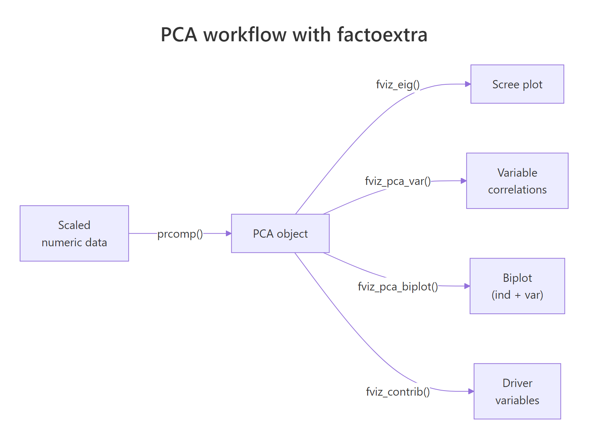
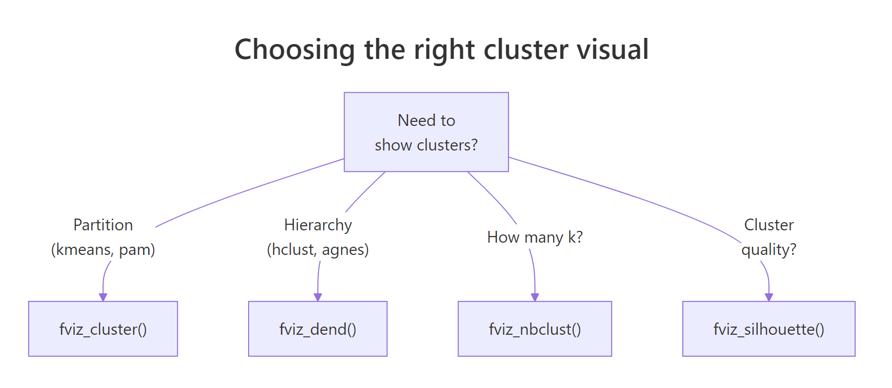
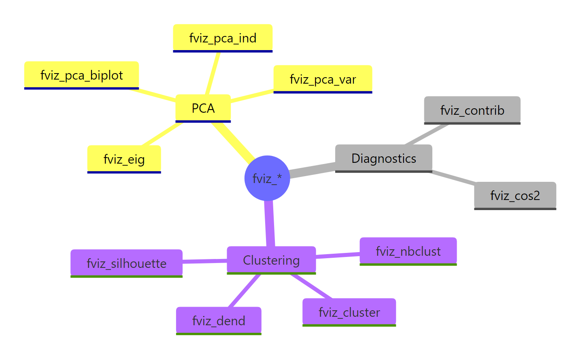

factoextra in R: Publication-Quality PCA and Cluster Visualisations in Minutes
factoextra is an R package that turns the dense numeric output of prcomp(), kmeans(), and hclust() into publication-ready ggplot2 visuals through a single fviz_*() call.
What does factoextra add on top of base R PCA and clustering?
Most R users hit the same wall after running prcomp() or kmeans(): the numbers are right, but the default plots look like 1995. The fviz_*() family in factoextra wraps every common multivariate result in ggplot2, with sensible defaults for colors, labels, and legends. Three lines of code, and you have a chart you can drop straight into a paper.
Here is the payoff. Run a scaled PCA on iris, then ask factoextra for a coloured biplot with species ellipses and non-overlapping labels.
The interesting part is what we did not write. No manual ggplot() setup, no geom_point() plus geom_segment() plus geom_text_repel() for arrows, no per-group colour scale. fviz_pca_biplot() infers all of that from the prcomp object and the grouping factor.
fviz_*() call hands back a regular ggplot object, so you can keep layering with + theme_minimal(), + labs(title = "..."), or + scale_color_brewer() exactly as you would with any other ggplot.Try it: Run a scaled PCA on six numeric mtcars columns and plot a biplot coloured by cylinder count. Use factor(mtcars$cyl) as the grouping variable.
Click to reveal solution
Explanation: habillage accepts any factor with one level per row of the original data. The arrows point from the origin in the direction each variable pulls the principal components, and the three cylinder groups separate cleanly along PC1.
How do I make a publication-quality PCA biplot?
A biplot does two jobs at once. Each point shows where an observation lands in PC1 by PC2 space, and each arrow shows how strongly a variable loads onto those same axes. factoextra's fviz_pca_biplot() stitches both layers together so the reader sees observations and drivers in one chart.

Figure 1: The PCA workflow with factoextra: one prcomp() call feeds every fviz_() function.*
We will switch to the built-in USArrests dataset for the rest of the post. It has four numeric crime rates across 50 US states, which is small enough to read every label.
Reading the chart: states on the right are high-crime, states at the top are highly urban, and the angles between arrows tell you how variables correlate. Murder, Assault, and Rape cluster tightly together because they correlate strongly. UrbanPop sits near 90 degrees away, signalling near-independence from violent crime in this data.
repel = TRUE on biplots. factoextra runs ggrepel under the hood to push overlapping labels apart. Without it, dense biplots become unreadable bowls of text.Now layer in the customisations a paper would expect: a curated palette, points coloured by quality of representation (cos2), and a clean theme.
The col.ind = "cos2" argument tells factoextra to colour each observation by how well the first two principal components capture it. States in deep orange are well-represented by this 2D view; states in pale teal are mostly described by PC3 or PC4 and should be interpreted with caution.
Try it: Re-run the polished biplot with the "npg" (Nature Publishing Group) palette and switch the geometry to text labels instead of points.
Click to reveal solution
Explanation: palette accepts journal-themed names from ggsci (jco, npg, aaas, lancet). Setting geom.ind = "text" replaces points with the row names from USArrests (the state labels).
How do I tell which variables drive each principal component?
A biplot shows the answer geometrically, but for a written report you usually want hard numbers. Three diagnostics carry most of the load: the scree plot for variance explained, the contribution bar plot for variables, and the variable correlation circle.
Start with the scree plot. It tells you whether two components are enough to summarise the data or whether you need three or more.
Two principal components capture roughly 87 percent of the variance in USArrests, which means a 2D biplot is a faithful summary. If PC1 had captured only 30 percent, we would have needed to draw PC2 vs PC3 or use a 3D method instead.
scale. = TRUE when variables use different units. USArrests mixes counts per 100k (Murder, Assault, Rape) with a percentage (UrbanPop), so unscaled PCA would let Assault (largest variance) dominate every component. Scaling fixes that by giving each variable unit variance before decomposition.Next, ask which variables drive PC1.
Three of the four variables sit above the dashed red line - the line marks the contribution each variable would have if all four contributed equally (100 / 4 = 25 percent). Assault, Murder, and Rape all clear that bar, confirming that PC1 is essentially a violent-crime axis. UrbanPop falls well short, which is exactly what we want: it gets its own axis, PC2.
cos2 measures how well an axis represents a variable (a quality score). contrib measures how much a variable explains an axis (a share of variance). The biplot above coloured individuals by cos2; the bar chart here ranks variables by contrib.Finally, the variable correlation circle gives an at-a-glance summary of every variable on every selected axis.
Arrows close to the unit circle are well-represented in the PC1-PC2 plane. Arrows pointing in similar directions correlate positively; arrows at right angles are roughly uncorrelated; arrows pointing opposite ways correlate negatively.
Try it: Plot variable contributions to PC2 instead of PC1.
Click to reveal solution
Explanation: axes = 2 swaps PC1 for PC2 in the contribution calculation. UrbanPop should dominate PC2 because the violent-crime trio already used up PC1.
How do I cluster data and visualise it with fviz_cluster()?
PCA reveals structure inherent to the variables. Clustering reveals structure inherent to the rows. factoextra wires them together: pick k with fviz_nbclust(), run kmeans(), then plot in PC1 by PC2 space using fviz_cluster().
Start by picking a sensible number of clusters. The within-cluster sum of squares ("elbow") method gives a quick visual.
The line bends sharply at k = 4 and flattens after. That is the elbow: each cluster you add up to four cuts variance meaningfully; beyond four, you are mostly chasing noise.
Now fit k-means with k = 4 and hand the result plus the data to fviz_cluster().
fviz_cluster() runs its own PCA under the hood when the data has more than two columns, then projects every observation onto PC1 by PC2. The convex hulls show cluster boundaries; the colours come from the cluster labels in km$cluster.
nstart = 25 or higher for k-means. A single random start can get stuck in a poor local optimum. nstart = 25 runs the algorithm 25 times and keeps the best result, at negligible extra cost on small data.Try it: Re-run fviz_nbclust() with method = "silhouette" and read off the suggested optimum.
Click to reveal solution
Explanation: Silhouette gives a single optimum (peak average silhouette width) rather than asking the analyst to spot a bend. On USArrests it favours k = 2, which separates urban-violent from rural-quiet, while elbow prefers a finer 4-cluster split.
How do I draw a colored hierarchical clustering dendrogram?
Hierarchical clustering offers a nested view: cut the tree at any level and you get a different number of clusters. factoextra's fviz_dend() colours branches by cluster and adds rectangles to mark where the tree was cut.

Figure 2: Choosing the right cluster visual based on the algorithm and the question.
Build the tree from the same scaled data and request four clusters.
Read it from the bottom up. States that join early are most similar; the height of each merge tells you how dissimilar the two sub-trees were before they fused. The four rectangles correspond to the four clusters at the level we cut.
For papers and posters with limited horizontal space, a circular layout often reads better.
USArrests, both will tell you that Florida and Nevada belong together, but only the dendrogram shows you they fuse early enough to be near-identical.Try it: Switch the linkage method from "ward.D2" to "complete" and rebuild the rectangular dendrogram.
Click to reveal solution
Explanation: "complete" linkage merges clusters by maximum pairwise distance, while "ward.D2" minimises within-cluster variance. Complete linkage tends to produce more evenly sized clusters; Ward tends to produce tighter, more spherical ones.
Practice Exercises
These capstone exercises combine PCA and clustering. Use the my_* prefix so your variables do not overwrite anything from the tutorial.
Exercise 1: PCA biplot of mtcars by cylinder
Run a scaled PCA on the numeric columns of mtcars, save the result to my_pca, and produce a fviz_pca_biplot() coloured by factor(cyl).
Click to reveal solution
Explanation: sapply(mtcars, is.numeric) returns a logical vector that selects every numeric column. factor(mtcars$cyl) converts the cylinder count into a three-level grouping factor that habillage understands.
Exercise 2: silhouette-driven k-means on iris
Pick the optimal k for scaled iris[, 1:4] using the silhouette method, fit k-means with that k, save it to my_clusters, and plot the result with ellipse.type = "norm".
Click to reveal solution
Explanation: Silhouette favours k = 2 on iris because versicolor and virginica overlap in feature space and only setosa is cleanly separated. The biological "true" k is 3, which is a useful reminder that statistical optima do not always match biological labels.
Exercise 3: average-linkage dendrogram of USArrests
Build a hierarchical clustering of scaled USArrests using method = "average", cut at k = 3, and produce a rectangular fviz_dend().
Click to reveal solution
Explanation: Average linkage merges clusters by mean pairwise distance, sitting between single (chain-prone) and complete (compact) linkage. With k = 3 you get a clean three-way split: low-crime urban, low-crime rural, and high-crime.
Complete Example
This block stitches every step into one workflow on USArrests: scale the data, run PCA, plot the scree, build the biplot, cluster with k-means, and draw a dendrogram. Run them in order; each block uses variables from the previous one.
The biplot, the cluster plot, and the dendrogram all describe the same 50 states from three angles: variable directions, partitional grouping, and merge nesting. Whenever they agree, you have a robust story; whenever they disagree, the disagreement itself is informative.
Summary

Figure 3: The full fviz_() family at a glance, grouped by analysis type.*
| Function | Input object | What it shows |
|---|---|---|
fviz_eig() |
prcomp |
Scree plot of variance explained |
fviz_pca_var() |
prcomp |
Variable correlation circle |
fviz_pca_ind() |
prcomp |
Individuals in PC space |
fviz_pca_biplot() |
prcomp |
Individuals + variable arrows together |
fviz_contrib() |
prcomp |
Variable / individual contributions to an axis |
fviz_nbclust() |
scaled data + clustering function | Optimal k heuristic |
fviz_cluster() |
kmeans/pam + data |
Clusters in PC1 by PC2 space |
fviz_dend() |
hclust |
Coloured dendrogram with cluster cuts |
Key takeaways:
- factoextra returns plain ggplot2 objects, so you can layer
+ theme_minimal()and friends without ceremony. - Always scale your data (
scale. = TRUEinprcomp(),scale()beforekmeans()) when variables use different units. - Use
fviz_eig()to decide if a 2D biplot is enough, andfviz_contrib()to back the visual story with numbers. - Pick
kwithfviz_nbclust()before clustering; rerun k-means withnstart >= 25for stable results. - A biplot and a dendrogram on the same scaled data describe the same structure from different angles, so cross-check them.
References
- Kassambara, A. & Mundt, F. - factoextra: Extract and Visualize the Results of Multivariate Data Analyses. CRAN. Link
- Kassambara, A. - Practical Guide to Cluster Analysis in R. STHDA. Link
- Lê, S., Josse, J. & Husson, F. - FactoMineR: An R Package for Multivariate Analysis. Journal of Statistical Software, 25(1). Link
- Husson, F., Lê, S. & Pagès, J. - Exploratory Multivariate Analysis by Example Using R, 2nd ed. CRC Press (2017).
- Wickham, H. - ggplot2: Elegant Graphics for Data Analysis. Link
- R Core Team -
?prcompreference. Link - Datanovia - factoextra reference site. Link
Continue Learning
- PCA in R - base
prcomp()walkthrough with manual interpretation. - Cluster Analysis in R - k-means, hierarchical, and DBSCAN side by side.
- Interpreting PCA Results in R - loadings, scores, and how to read a scree plot.